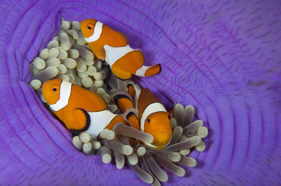
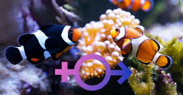

- Cá hề hay còn được gọi là cá hải quỳ (tiếng Anh: Amphiprioninae hay Clownfish) là loài cá biển sống ở các dải đá ngầm và rạn san hô, nằm trong nhánh cá hề thuộc gia đình họ Cá thia. Cho đến nay ba mươi loài đã được nhận biết: một số thuộc chi Premnas, trong khi số còn lại thuộc chi Amphiprion.
- Trong tự nhiên, chúng thường sống cộng sinh với hải quỳ. Tùy thuộc mỗi loài, cá hề có màu vàng, cam, đỏ nhạt, đen nhạt xen bởi các sọc trắng. Những cá thể lớn nhất có thể dài tới 18 xentimét (7,1 in), trong khi loài nhỏ nhất chỉ cỡ 10 xentimét (3,9 in).